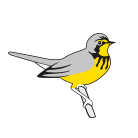

This is an internal reference for creating documentation with images in precompiled vignettes.
Precompile
The precompile script:
# Pre-compile vignettes which run for a while
library(knitr)
library(readr)
library(stringr)
# Remove the figures folder (start clean)
unlink("figures", recursive = TRUE)
# Make sure to put figures in local dir in knitr chunk options
v <- list.files("vignettes", ".orig$", full.names = TRUE, recursive = TRUE)
for(i in v) {
new <- stringr::str_remove(i, ".orig$")
knit(i, new)
read_lines(new) %>%
str_replace_all("\"vignettes(/articles)*/", "\"") %>%
write_lines(new)
}
cache <- list.files("./vignettes", "cache", include.dirs = TRUE,
recursive = TRUE, full.names = TRUE)
unlink(cache, recursive = TRUE)
#build vignette
#devtools::build_vignettes()
#unlink("./doc/", recursive = TRUE)
#unlink("./Meta/", recursive = TRUE)This script pre-compiles vignettes and replaces the figure paths
appropriately.
Note that this relies on all figures having alt text and at
least a fig.cap = "" as this creates a different style of
figure and the replacement therefore works.
All precompiled vignettes also need to define the figure path to be
in the vignettes/articles/figures folder. Provide a suffix
as well to prevent duplicates.
knitr::opts_chunk$set(
collapse = TRUE,
comment = "#>",
# For pre-compiling and pkgdown (relative to pkg home)
fig.path = "figures/suffix_",
dpi = 150
)
Images: Created elsewhere
- Put the image in the
vignettes/articles/figures_otherfolder - Reference the image from the working directory of the article.
With include_graphics()
Use
fig.alt = "Test of birds canada logo", fig.cap = ""
include_graphics("figures_other/logo.png")
Directly with markdown: 
Note: Use the
\at the end to ensure that the text is treated as alt text and not a caption (ref)
\